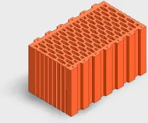

TermoBRIK TD 440 PD P10
TermoBRIK 440 PD je určený pre jednovrstvové obvodové nosné aj nenosné murivo šírky 440 mm s vysokými nárokmi na tepelný odpor a tepelnú akumuláciu steny.
- Tepelný odpor
- ++ 3,47 m2/kW
- Tepelný odpor
- + 3,27 m2/kW
- Tepelný odpor
- 2.75 m2/kW
- Spotreba na m3
- 37 ks
- Spotreba na m2
- 16.3 ks
- Hrúbka muriva
- 44 cm
- Počet kusov na palete
- 60 ks
- Mrazuvzdornosť
- M15
- Pevnostná trieda
- P10
- Plošná hmotnosť
- 340 kg/m2
- Max.objem.hmotnosť
- 700 kg/m3
- Maximálna hmotnosť
- 17 kg
- Rozmery
- 440 x 240 x 238 mm